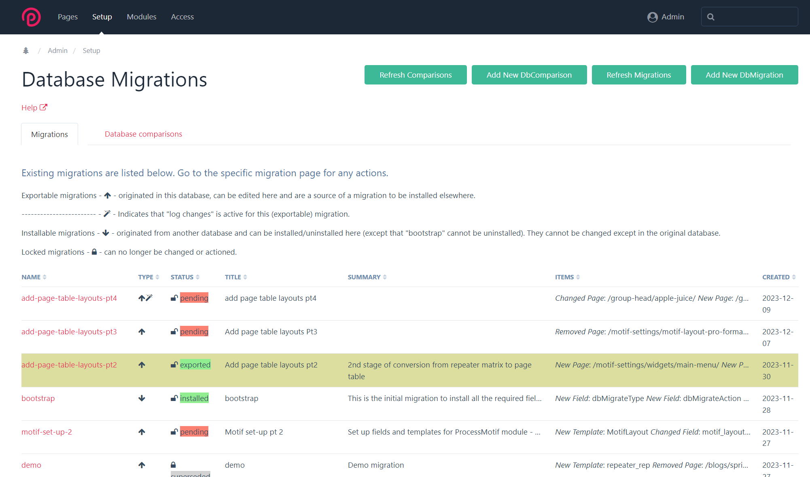
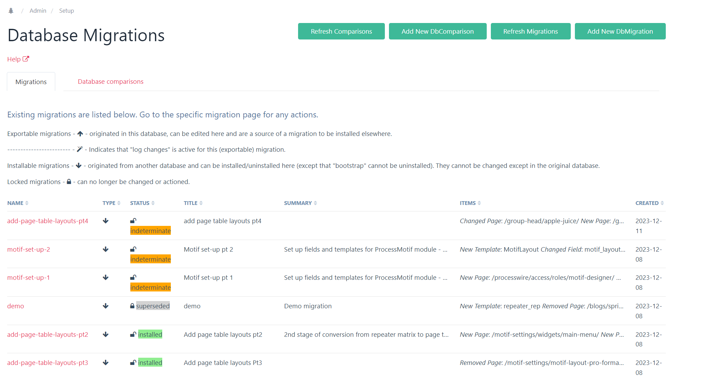
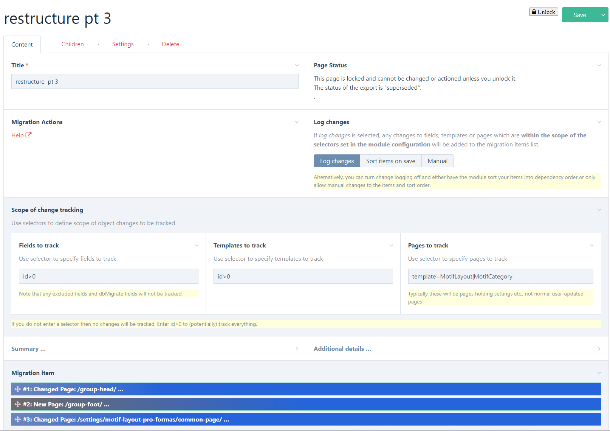
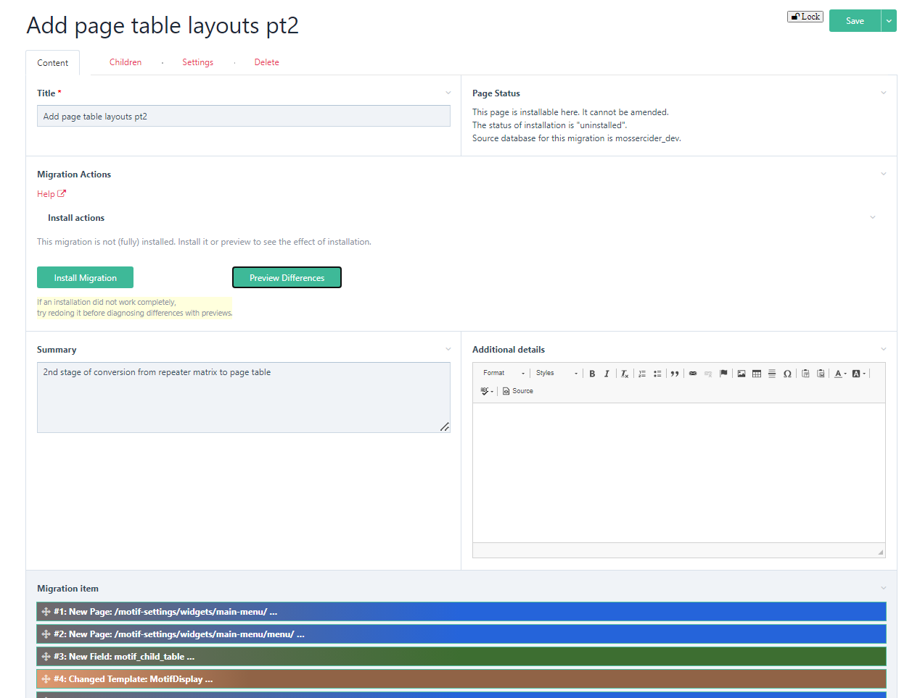
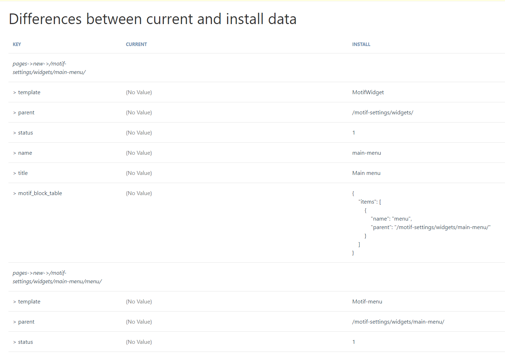
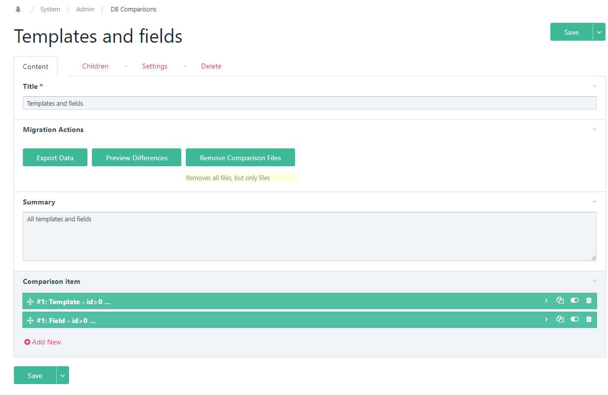

This is a ProcessWire module to enable database changes in a development environment to be migrated to a test or live environment, without the need for any coding, and for all such migrations to be fully documented and capable of reversal.
The module also has automated tracking of changes - your migration specification is built for you as you make changes in the development system (from v 1.0.0). In this help file, instructions relating to manual creation of migrations are displayed in grey text and may be ignored if you are using change tracking. This version (2.0.0+) inludes enhanced sorting of the migration sequence and persistent installation to deal with cyclical dependencies. There is no guarantee that major version changes (x.0.0) will be compatible with earlier versions, so great care needs to be taken if you happen to have tried a previous version and want to upgrade it.
The following documentation is pretty comprehensive, for which I make no apologies (in the hope that users will read it before asking questions). So:
TLDR:
ProcessWire is an outstanding content management system/framework owing to its flexibility, ease of use and extensive API. However, it suffers from a common problem in database-oriented CMSs in that business logic may be explicitly or implicitly stored in the database rather than in code. This is particularly the case where it is used for a full-blooded app rather than just a simple CMS for a website. This is a shame because it is such a brilliant app-building tool.
The problem arises where the developer wishes to develop and test new or changed features in a development/test environment and then port those to the live environment. If the business logic is purely in the code and there are no database changes, then no issue arises, but if the changes involve database changes then typically the solution might be to test them, then replicate them manually (and hopefully accurately) in the live system. For large changes, this can be time-consuming and possibly error-prone. If a test environment is used as well as a development and live environment, then the problem is doubled. The 'RockMigrations' module circumvents this problem by putting the database definitions in code. ProcessDbMigrate allows the developer to use the PW GUI and not to have to write any additional code to define database changes. The choice of approach depends on user preferences.
The ProcessDbMigrate module is designed to make updating the test and/or live system as quick, easy and error-free as possible. However, it should be appreciated that deriving migrations from UI interactions is complex, so the user is advised to take back-ups before any critical steps and to test migrations before applying them in a live environment.
Purely code-based migration approaches effectively eschew the use of PW’s GUI development environment. This is technically perfectly sensible but restricts usage to those who are happy not to use the GUI. PW is a great tool for enabling less experienced developers to build great apps. This module is aimed at that group and others who wish to use the PW GUI but still be able to do controlled and accurate migrations.
The concept of this module is therefore to achieve the following:
The module has quite a wide range of applications. The original intention was just to handle the first of the examples below, but it has actually proved more useful than intended!
The module has the following principal components all within the ProcessDbMigrate folder:
Migration definitions are held in .json files in the site/templates/DbMigrate /migrations/{migration name} directory. This directory contains up to 3 sub-directories - “new”, “old” and “archive”. The first two may each contain a file called a migration.json file, which defines the scope of the migration, and - once the migration been exported (for ‘new’) or installed (for ‘old’) – a file called data.json. The data.json file contains the data specifying the details of the installation (or uninstallation, in the case of the ‘old’ file). In addition, the “new” and “old” directories can contain “files” directories which hold the files associated with pages in the migration. The “old” directory may also contain an “orig-new-data.json” file for comparison purposes. The “archive” directory contains earlier versions of the “old” directory if migration definitions have changed. There may also be a file ‘lockfile.txt’ if the migration has been locked, which just holds a date & time stamp of when it was locked.
The migration files described above are mirrored by pages of template "DbMigration" under a parent /{admin name}/dbmigrations/, with template "DbMigrations". The mirroring happens in two ways:
Migrations therefore either view the current database environment as a “source” or a “target”. Technically, this is determined by whether the $page->meta(‘installable’) for the page is set or not. (The terms ‘installable’ and ‘exportable’ are used in this help file to differentiate the two types). Thus, if required, a knowledgeable superuser can change the type of a migration by adding or removing this meta item (e.g. in the Tracy console), but this is deliberately not made easy. (See further notes below on source and target databases). Also, the source database name is documented in the migration.json file.
Migration items may be either fields, templates or pages.
This module alters files and database elements. It is intended for superuser use only. Always take a backup before installing, updating or uninstalling it. Also take a backup before installing or uninstalling any migration.
Use at your own risk and test before implementing on the live system. Always have the same version of the module in source and target databases.
The module may not handle all field types properly - particularly some pro fields and third party fieldtypes. Please refer to the section on fieldtypes and report any additional needs via the forum support thread.
When migrating pages, the sort order of children is ignored (it is also ignored in change tracking). So if you need to change it, then either do it manually or programmatically (possibly via a hook on the migration to run after installation).
Initially install the module in your dev (source) environment. Backup your database first.
Place the whole folder in your site/modules/ directory.
Install ProcessDbMigrate.
Installing the module runs a ‘bootstrap’ migration which creates (system) templates called DbMigration, DbComparison and DbMigrations, and parent pages in the admin named ‘dbmigrations’ and ‘dbcomparisons’, so make sure you are not using those already and rename if required. It also creates some (system) fields which include “dbMigrate” in their name. All templates and fields have the ‘dbMigrate’ tag and are set as ‘system’ (i.e. flags=8) so they do not muddy the standard menus. The bootstrap migration files are copied by the installation process to the site/templates/DbMigrate directory, which will be created if it does not exist.
Configure the settings. Note that the settings are specific to the current database.
$config->dbMigrateEnv in your config.php file according to the detected environment there. This value will be appended to the database name by the module when determining the database in use. For example, in your config.php file:
$config->dbMigrateEnv = '_live';
//Below is for dev site
if($config->paths->root === '/var/www/html/') {
$config->ENV = 'DEV';
$config->dbMigrateEnv = '_dev';
Change tracking: From version 1.0.0, the module incorporates automated change tracking, which eliminates the hardest part of the previous versions - namely the specification of the migration scope. In this section you just set selectors defining the scope of tracking and any changes within that scope will be tracked. For fields and templates, you might wish to use From version 2.0.0, this is specific to each migration, not set in the module config.id>0 to track all changes. For pages, you will probably just want to track 'settings' pages which are not routinely amended by users - typically this will be done by specifying the template(s), e.g. template=MotifLayout. All fields, templates and pages related to the module itself will be excluded automatically. If you do not enter a selector then no changes will be tracked.
Open the admin page “Setup -> Database Migration” to create your first migration. You will see that one (“bootstrap”) is already installed and cannot be modified.
Note that this module has only been fully tested on ProcessWire>=3.0.206. At least 3.0.210 is recommended. It may work on previous versions, but certainly no earlier than 3.0.172.
Place the code in the modules directory, replacing the existing files, then refresh modules in the database. Check whether the bootstrap is still showing as ‘installed’. It should have been installed automatically; if not, then 'Refresh migrations' on the Setup->Database Migrations page.
If you are upgrading from a version earlier than 0.1.0, then the RuntimeOnly module will no longer be required for this module so, unless you use it elsewhere, you can uninstall it after the upgrade.
Before any upgrade, ensure that all current migrations are completed and locked, and back up the database.
Before uninstalling the module, all migration pages (other than the bootstrap) must be removed manually (and the trash emptied). Then, uninstalling the module uninstalls the bootstrap migration automatically; if that fails then the error will be reported, so that it can be fixed manually, before attempting to uninstall again.
The pic below illustrates the DB Migrations page in the 'source' environment. Please note that some pictures may be from earlier versions and may not show all features to be found in later versions.

The status of a migration (as a source page) can be 'pending' or 'exported'. 'Pending' means either that the migration data have not yet been exported or that the current export files differ from the source database.
To install on the live (or a separate test) environment, sync your source and target code environments. Then install the module in your target environment (from step 2 above). After installation of the module, on opening the admin page "Database Migrations", the individual Migration pages are created from the definitions in their respective /new/migration.json file.
If you do not have a separate test environment, one approach is to backup the dev database and restore a copy of the live (or test) database to the dev environment. Then install the module on the restored database (from step 2) - you will have to assign a different database name in the module config. However, a separate test environment is better in that it more accurately mimics the live one and is less likely to cause confusion.
Your new migration should be listed (as 'indeterminate' status) in the Database Migration admin page.
The pic below illustrates the Database Migrations page in the target environment.
Using the module
When carrying out development work, first create a migration page and turn on change tracking - 'log changes'. If you do not turn on change tracking, you will need to keep a note of what fields, templates and pages you have added, changed or removed (create and update a migration page as you go along, rather than keep a separate note of changed components).
Note that the module does not handle components such as Hanna codes and Formbuilder forms. These come equipped with their own export/import functions, so use those (see "Snippets").
The migration page also allows you to document the migration using a rich text box, and it is recommended that you use this to add notes about the migration, including any pre- or post-migration checks and procedures to be carried out. (You may carry out some procedures automatically – see the section on hooks).
See example below (note that this example has been created manually, not with change tracking, and is from a previous version):
The next example illustrates a migration created by logging changes:

Change tracking: From version 1.0.0, the module incorporates automated change tracking, which eliminates the hardest part of the previous versions - namely the specification of the migration scope. From version 2.0.0, the scope of this tracking is included in each migration page, rather than globally. You just set selectors defining the scope of tracking and any changes within that scope will be tracked. For fields and templates, you might wish to use id>0 to track all changes. For pages, you will probably just want to track 'settings' pages which are not routinely amended by users - typically this will be done by specifying the template(s), e.g. template=MotifLayout. All fields, templates and pages related to the module itself will be excluded automatically. If you do not enter a selector then no changes will be tracked.
Based on the change tracking scope you have defined, on your migration page, the module will have entered the names of new/changed/removed fields and templates, and the paths of pages (as /path/to/pagename/) as you modified the database through the back-end UI - you may need to reload the page to see this.
Alternatively you can choose to add migration items manually. Selectors may be used instead of paths or names (see box below) - this has to be done manually. Note that entry of names and paths is in text fields, not using dropdowns, as names, paths and ids may be different in the source and target systems – there is limited real-time checking of these.
If an item has a different name in the target database then it is provided in the 'old name' box, otherwise it is left blank (with change tracking on, the old name will be the name before any changes made).
If you are using change tracking then any pages which are deleted in the UI will be shown as having been moved to the trash. They will not be shown as removed until they are deleted from trash. If you make a number of changes to an object but end up where you started then it will (should) be automatically removed from the migration (including if you create a new object then delete it).
Note that the sequence is very important – if items are dependent on other items, they must be declared in the correct order for installation (when uninstalling, the order is automatically reversed and 'new' and 'removed' are swapped). Note particularly for Repeater and PageTable field types, you need to define the components in the right order – e.g. the template before the field that uses it, in the case of new/changed components. With change tracking on, the order should automatically be correct, but it is wise to review it in any case. If you have entered the items manually, you can use the 'sort on save' option to sort the items for you, but again, check that it makes sense as it may not be perfect. It is possible (especially with Page Table fields) for items to have circular dependencies. Error messgaes will be given about this - see the troubleshooting section on cyclical dependencies for more information. Usually the installation will proceed satisfactorily even if the dependencies are not correct, but it helps to get them right.
If you define a page item which has a rich text editor field that includes an image on another page, you will also need to include that other page in the scope (as 'changed' even if it has not changed). Otherwise you do not need to declare components that are unchanged. Change tracking should automatically add pages with the source images used in a RTE field but, again, it is wise to check. Note that if you subsequently change the 'image source' page and revert the principal page so that the latter is removed from the migration, then the 'image source' page should also be removed from the migration unless it is within the defined tracking scope in its own right.
Selectors (only applicable if creating migration manually):
Only one object name is permitted per item, however objects may be selected by using a selector rather than individual names or paths. Selectors operate as follows:
Do make sure that your selector works in the source and/or target environments, as appropriate, before implementing it (TracyDebugger is great for this). A typical error is forgetting to add “include=…”.
Note that if your selectors encompass a large number of objects, processing time may be extended.
You can limit the scope of changes to pages by restricting the fields to those specified in the "Restrict Fields" box. This restriction will apply to all pages within the scope of this migration, but only this migration; if you wish to exclude certain fields or fieldtypes globally, enter these in the module configuration. It will also restrict the logging of changes to pages so that only pages which have changes to the specified fields will be logged as changed.
You can preview the changes at any time, even before you export them, this will help you ensure that the data you are proposing to migrate is correct. You can also test as you go along, if you wish, and add to the migration in stages.
Note that migration pages just define the scope of the migration. It is entirely feasible for other parts of the dev database to be changed which are outside this scope and which will therefore not be migrated. However, do not do this with 'log changes' turned on, or you will have to remove unwanted items manually. If you are doing this intentionally, be careful to ensure that the scope of your migrations do not overlap, otherwise you may inadvertently make changes that you do not wish to do yet.
When saving a migration page in the source database, the system will warn you if the current migration scope overlaps with other exportable migrations. Do not proceed to install such overlapping migrations. They will interfere with each other, even if they are not making conflicting changes – once one has been installed, installing the other will create an ‘old’ json file that reflects changes made by the first, so (for example) attempting to uninstall this second installation will appear not to be successful as it will not be able uninstall the changes made by the first. If two migrations necessarily overlap, then the correct process is to install the first one and lock it before installing the second migration (see 'Locking' below).
On the migration page, you can add any number of "snippets". These snippets do not do anything, but can be a convenient place to store (for example) Hanna code exports for pasting into the target environment and they help to make the page a comprehensive record of the migration.
You can also use snippets for php code to run before or after installation (or uninstallation). The code can then be copied into Tracy’s console log and run from there. Use the description box in the snippet to indicate when the code should be run. For example, say you have changed an address field to split out the post code into a separate field. The migration definition will specify the new field and the changed template. The code snippet (to be run after installation) will then include the code to extract postcodes and place them in the new field.
Alternatively, if you want code to run automatically, you can use hooks – see the separate section on this.
When ready to test (or migrate to live), click the "Export Data" button on the migration page. Some informative messages should result. Your codebase will now contain the json files in site/templates/DbMigrate/migration/{your migration page name} – you can inspect them if you wish in your IDE.
Sync the code files with your test/live environment (or restore the test database to your dev environment, making sure you back up the dev database first). In the test/live database, install the module as described above, if necessary, and go to the Database Migration admin page. You should see your new migration listed.
Go to the migration page. Before installing, you can use the "preview" button to see what changes will be implemented. If you are happy, click "Install". This should result in various messages and maybe some errors, if the migration was not able to complete fully (see section below for how to deal with partial migrations). See example of the migration page in 'installation' mode below:

and an example preview:

Note that you will now have the following files:
To uninstall a migration, click the "Uninstall" button (again, you can preview beforehand). This should revert the database to the initial state, but again there may be reasons why this cannot complete fully – see the notes below. Please note that uninstalling a migration is NOT the same as restoring the database. After uninstalling a migration, some of the object ids might be different from their original values. To fully revert the database, then restore the original backup (you did take one, didn't you?), but you will also need to remove the 'old' folder.
N.B. When re-installing migrations, if the migration definition has changed, the system will require you to uninstall first - otherwise the “old” data.json will not properly reflect the new scope, affecting any future uninstallation. In these circumstances, a backup copy of the “old” directory is created in the archive directory.
When an installation is complete, then you should lock it so that it is clear that it is complete and so that it will not be referred to by the system when checking for conflicts etc.
Migrations can be locked in the source system, the target, or both, in the following ways:
This allows for some flexibility of use, e.g.
It is stongly advised that you install and lock a migration before making subsequent changes to the source and building further migrations. Otherwise earlier migrations may attempt to install later features, if they overlap, and may fail because dependent items are not present. This might be resolved by installing both migrations and then attempting to re-install the first, but is not guaranteed.
Comparisons work in a similar way to migrations. First, make sure you are in the database which you wish to be the ‘source’ of the comparison (usually the development database – this will be assumed for the rest of this narrative). Also, make sure that your database is named (on the module settings page).
On the Database Migrations page, select the “Add New DbComparison” button. On the DbComparison page you can add a summary and a number of ‘comparison items’. Note that comparison items just comprise an object type (field/template/page) and a name/selector. These items define the scope of the comparison. In theory, you can compare entire databases by using a selector “id>0” for each of pages, fields and templates. However, this is likely to be quite resource-hungry if the database is large and may cause your system to hang, so it is better to use a scope that is more selective. In any case, you will probably want to exclude migration and database comparisons from the scope, together with the related repeater pages, otherwise it can be a bit self-referential (but shouldn’t crash for this reason alone). The example below compares all templates and fields (but not pages):

After saving the page, click ‘export data’ (or preview first) and sync the templates/DbMigrate/Comparison/{name}/ directory to your target environment. Then go to the target database and open the comparison page (you may need to refresh the comparisons summary page first). Here you will see two ‘migrate actions’:
This process is only semi-automated. The system will work out the scope of the required migration (i.e. what fields, templates and pages require adding/changing/removing) but will not identify any dependencies, so the sequence of migration items might be wrong. Also, it will not identify any name changes – if names are different then this will result in a ‘new’ and a ‘removed’ item.
Therefore, clicking the ‘create draft migration’ button does only create a draft. You need to
If you have selected the whole database for comparison, then rather than create a migration, you are probably better just to do a backup and restore!
Subsequent migrations: Up until the point when migration created from a comparison has a /new/data.json file exported from the source system, it is considered to be ‘draft’ (signified by a meta(‘draft’) element). While in this draft state, it is replaced by any new draft migration created from the same comparison. After it is no longer draft, creating a draft migration from a comparison will result in a new draft migration, leaving the original in place.
In this way, a comparison page can be left in place and might used to create multiple migrations over time (provided, of course, that any new changes to the data are exported from the comparison page in the source database and sync’d to the target). But note that this will only work if the scope of the generated migration (which may be tighter than the scope of the comparison) covers all the changes. If it does not pick up all the changes you will have to create a new comparison.
Many of the ProcessDbMigrate methods are hookable:
You can place your hooks in site/ready.php. In this case you will need to check the name of the migration page before running – e.g.
wire()->addHookAfter('ProcessDbMigrate::installMigration', function ($event) {
$migrationPage = $event->arguments(0);
if ($migrationPage->name == 'my-migration') {
///code to run
}
});
and then you use $migrationPage to further reference the migration page. This approach keeps all your hooks together and you have to remember to sync the site/ready.php as well as your migration files.
Alternatively (the recommended approach), you can place a file called ready.php in the site/template/DbMigrate/migrations/{my-migration}/ directory, in which case your script would be
$this->addHookAfter('ProcessDbMigrate::installMigration', function ($event) {
// code to run
});
and then you can use $this to reference the migration page. This approach keeps all your migration-related data & code together and you only have to sync the migration folder. It also means that your migration-specific ready.php code will be displayed at the bottom of the migration page. Also, if you ‘remove migration files’ it will remove your custom code as well (usually you will only be doing this as preparation to delete the migration, so that is what you want). With the first approach, your hook will remain in site/ready.php.
Of the available hooks, installMigration and uninstallMigration are likely to be the most useful. For example, a hook after ProcessDbMigrate::installMigration could be used to carry out database-wide changes following the amendment of the structure. Using the example described under ‘Snippets’ earlier, say you have changed an address field to split out the post code into a separate field. The migration definition will specify the new field and the changed template. The hook could then include the code to extract postcodes and place them in the new field. You could place code to undo this as a hook before ProcessDbMigrate::uninstallMigration, so that executing the uninstall exactly reverses the install.
In some circumstances you may not wish the code in your hook to run if (for example) the installation was not completely successful. You can test the status of a migration as follows (use $migrationPage = $event->arguments(0); instead of $this if your code is in site/ready.php) by checking if $this->meta('installedStatus')['status'] is 'installed' or 'uninstalled'.
Note that $this->meta(‘installedStatus’) is an array as follows:
*Reportable differences exclude any differences in excluded fields and also any differences that are purely caused by pages having different ids in the source and target databases. The array is multidimensional of varying depths with the bottom elements being 2-element arrays containing the differing values.
**Note that it is perfectly possible for there to be a scope change even if there are no differences in the migration definition. For example, if a page selector is used and changes to the source database mean that there is a change in the pages found by the selector.
Use the Tracy console - d($page->meta('installedStatus')); - to inspect the installed status for any migration page. Call the method exportData() - $page->exportData('compare'); - first to update the meta if required.
The following files are created:
The 'log changes' method is designed to faithfully record objects (which are within the scope of change tracking defiend in the migration) which have changed and put them into the correct dependency sequence. It is still wise to review the result to see if it makes sense. Sometimes it might appear not to: for example, if you have created and then deleted a repeater field, the repeater_fieldname template item will still appear in the migration. That is because deleting a repeater does not delete its associated template - the module has worked correctly because there is still a new template - see System and repeater templates/fields and flags.
With a really complex migration, it is possible that the migations item cannot be sorted properly as a "cyclical dependency" has arisen. This can occur with either 'log changes' or 'sort on save' selected. If this occurs with change logging on, you should be alerted immediately after the action which created the dependency. Assuming it is not a spurious dependency (maybe the system is being over-zealous), in which case you can try and manually sort the items, the most rigorous solution is to back out the last change, migrate what you have (or a sensible chunk of it) and create a new migration as a second stage. If you just did 'sort on save' then the error message will arise when you save the migration page and you will need to review the changes to detemine where the cyclical dependency might arise.
If you do end up with a migration which contains cyclical dependencies, it is probably still possible to install the migation (and it is probably best to tolerate it at this time, rather than trying to split it retrospectively, because you may end up with a migration which depends on items in a later migration - see section on 'locking' above). On installing the migration, the system will attempt up to 3 successive installations in order to get the required data, although you will get error messages implying it is not fully installed (arising from the earlier attempts). If it is still not installed, then you can try clicking 'install' again, but it is likely that something is missing in your migration, so look at the preview to determine what it is.
Issues may arise with migrations of pages, which are not possible to foresee fully. This is particularly the case if the user migrates pages with multiple complex field types and custom processing. The module was designed for migrating developments, not for mass updating of user pages. It is therefore assumed that any pages being migrated are of a ‘site-settings’ nature, not user pages. That said, it is possible to use the module more generally (e.g. in ‘rescue’ mode) but test carefully first. In particular, the host PW application may make use of page hooks. All page actions in the module allow hooks to run. To enable users to modify this behaviour, session variables are set for the duration of the following methods:
These can then be referenced in the user's application code as required.
In some circumstances, migrations may not complete properly, even after the maximum of 3 attempts that the system will execute. This may result in error messages when the migration is installed. Also, the page will show that it is not fully installed and will display a button to preview the remaining differences. Some typical examples and possible solutions are set out below.
Hopefully, these will only tend to occur when you have created the migration manually, rather than using 'log changes', but nothing is perfect...
Occasionally, re-clicking 'install' (or 'uninstall' if that's what you were attempting) may resolve this, but it is unlikely given that the system will have already tried 3 times. Note that you cannot change a migration definition in the target environment, so any changes need to be done in the source environment and re-exported (and installed after uninstalling the previous version).
Fields not fully installed: This may be because there are fieldtypes which cannot currently be handled by the module. It could also be caused by dependencies on pages (e.g. for page reference fields) where the pages have not been included in the migration ahead of the field, although those should have been handled by the triple-install approach; more likely you have omitted to include a dependentn item in the migration, particularly if it was created manually.
Templates not fully installed: You may not have included new fields, used by a template, within your migration page scope, ahead of including the template. You will need to go back to the dev system and do this (re-export and re-install)
Pages not fully installed: This may be because you have not previously defined new templates or fields used by a page, in which case you will need to go back to the dev system and do this (re-export and re-install). It might also be because certain fieldtypes cannot be sync'd but do not need to be and should be excluded. To exclude field types from the pages scope, go to the module config page. If there are field types that do not sync correctly, but which you do not wish to exclude, then you will need to update the target system manually (the preview should give you the details).
Components not removed: This is most likely because you have misnamed the component or because it does not exist in the target database. Double check the naming and go back to the dev system to change as required.
Use the preview button to see what changes have not been fully implemented. You can also inspect and compare the json files to identify the issue (your IDE is probably the best place to do this). For example, compare templates/…/new/data.json (the required state) with assets/cache/dbMigrations/new-data.json (the current state). (Similarly, for uninstallation problems, compare ../old/data.json with assets/cache/dbMigrations/old-data.json).
If you are unable to resolve the issue then it may be a simple bug or that the situation is complex and not envisaged in the design of the module. In any case, the ultimate fix is to review the stated differences in the 'preview' and make the required changes manually (uncheck 'Prevent conflicting saves?' in the module configuration first, or lock the migration, so that saves are not blocked). If you unchecked the 'Prevent conflicting saves' option then, when you are satisfied that everything is correct, lock the migration and re-check the option.
The module handles (I think) the following field types:
Core fieldtypes. These have not all been tested, but most are straightforward:
FieldtypeRepeater (and FieldtypeRepeaterMatrix). This is more complicated because the field is actually linked to a template and multiple repeater pages.
When defining a migration, the normal sequence is to define fields before templates which might use them. However, repeater fields are linked to their own templates, so the repeater_fieldName template needs to be included before fieldName.
The system is designed to handle nested repeaters on a page.
When using 'log changes' all required repeater templates and dependencies should be handled automatically. Note however, that if you delete a repeater field, PW does not delete the corresponding template. So if, for example, you have 'log changes' on, create a new repeater field then delete it, the migration page will still show the new repeater template (but not the field) - which is exactly right, but might not be what you intended.
FieldtypePageTable. This has a PageArray so requires special processing .
FieldtypeStreetAddress. This is an object and requires special processing analagous to PageTable.
Images and files should be migrated along with the page that holds them. Any Rich Text Editor (textarea) fields with embedded images or linked files should migrate satisfactorily provided the pages which hold the images/files are included in the migration (this should be automatic with 'log changes'). If image/file fields use custom fields (defined in the template "field-xxxx" where xxxx is the image/file field name), then it is important that any new or changed field-xxxx template is specified in the migration before the page that uses the related image/file field. if the image/file field itself is unchanged, it does not need to be specified.
ProFields other than RepeaterMatrix have not been tested, so may or may not work.
After an initial export from a source and installation in a target, the question arises as to how to deal with revised or additional migrations. If a migration is revised in the source, then it can be installed in the target once the previous version has been uninstalled. New migrations exported from the source are handled in the same way as initial migrations.
However, the user may wish to use a (migrated) test or live database as a new source for subsequent development (assuming the migrations so far are bug-free). In this case, use one (or both) of the following strategies:
Note that the 'append environment' method does not work if you are using the same environment for a development and test database - you will need to use the custom name method for this.
The use of names for items rather than ids should mean that most user changes will not disrupt future migrations. Installation 'previews' should highlight any difficulties. Overlapping scope detection on migrations only looks at unlocked migrations.
It is also possible, in theory (not advised, but maybe necessary if the development environment is inaccessible) to make changes directly to the live database and 'export' them for installation on the development system. These should be locked after installing them. Database naming is strongly recommended if you use this strategy.
An additional use of the module is ‘rescue’ mode. If a number of erroneous changes have occurred to a live database which need to be reverted, then a suitable backup copy can be restored to the development environment (after backing up the dev database!), given a unique name, and the relevant migration exported for installation in the live environment. After successful installation, the development database can be restored to the development environment – the ‘rescue’ migration will then be loaded automatically as a (‘installable’ – i.e. non-editable or exportable) migration and can be installed if it makes sense to do so.
All repeater_.... templates are system templates. If you delete a repeater field the template will still remain. If you want to delete the template as well, you will need to unset the system flag first, as described below. If you are using 'log changes' on a migration page and (for example) you created a new repeater field then deleted it, the migration item for the field will be removed, but the migration item for the repeater_.... template will remain (because the template is still there). If you want to remove it, either delete the template as described below (probably the best approach) or switch the migration to 'manual', delete the item, the switch back to 'log changes'.
In addition to the PW-created system templates/fields, note that all dbMigrate templates and fields are also designated as ‘system’
In system fields the 'flags' is set to 8. This means that they are hidden from the setup dropdown and cannot be used in the front end. To unset the flags it is necessary to first set the override, viz:
$t->flags = Template::flagSystemOverride; $t->flags = 0; $t->save();
(Substitute Field for Template if resetting a field. For pages you need $p->status = Page::statusSystemOverride and $p->removeStatus(Page::statusSystem)).